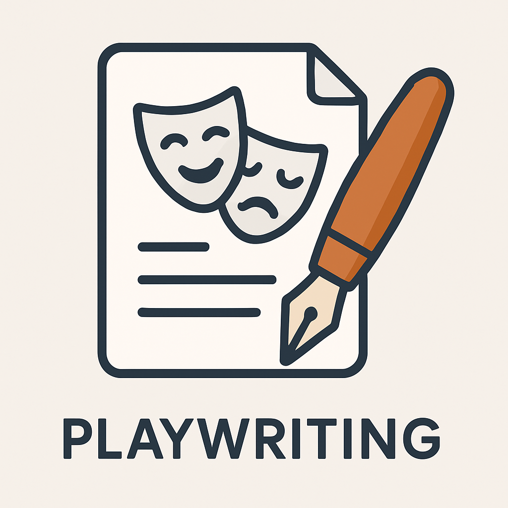

Playwriting
Playwriting is the art of writing plays or drama for performance on stage, radio, television, or film.A play is a written form of drama, and the person who writes it is called a playwright.

The script contains dialogues, actions, stage directions, and sometimes music cues or lighting instructions.
categories of playwright
- Classical (universal) dramatists, such as Aeschylus, Sophocles, Aristophanes, and Euripides—who shaped the earliest forms of dramatic literature in ancient Greece.
- Modern playwrights like Shakespeare and Marlowe from England, or Corneille and Sartre from France—whose works remain influential in modern theatre.
- Contemporary dramatists from Nigeria and beyond, including Wole Soyinka, Efua Sutherland, Zulu Sofola, J. P. Clark, Femi Osofisan, Ola Rotimi, and others—who blend local themes with international dramatic techniques
duties of a playwright
- Writing the script of the play, including plot, dialogue, and stage directions.
- Creating believable and interesting characters for the story.
- Developing the main theme or message of the play.
- Organizing the play into acts and scenes for proper structure.
- Collaborating with directors and producers to bring the play to life.
- Revising and editing the script to improve clarity and quality.
- Attending rehearsals to guide and correct the performance if needed.
- Researching facts, culture, or history to ensure accuracy in the play.
- Writing plays that entertain and educate the audience
The Script
A play begins with a script. This is the written document that contains:
- The storyline (plot).
- The characters and their dialogue.
- Stage directions (what actors should do).
- Sometimes, suggestions for costumes, setting, and lighting.
Parts of a Play
- Title – The name of the play.
- Cast List – Names of all characters involved.
- Scenes and Acts – A play is divided into acts and scenes to break it into parts.
- Dialogue – The spoken words of the characters.
- Stage Directions – Instructions for the actors on movement, emotion, and tone.
- Setting – Where and when the action of the play takes place.
Qualities of a Good Playwright
- A good playwright should Be creative and imaginative
- A good playwright should Have a good understanding of human behavior
- A good playwright should Use language clearly and effectively
- A good playwright should Understand how to create conflict and resolve it
- A good playwright should Know how to develop characters that seem real
- A good playwright should Be familiar with stage performance
Types of Playwriting
- Tragedy – A serious play with a sad or unfortunate ending.
- Comedy – A light, humorous play that ends happily.
- Tragicomedy – A mixture of both tragedy and comedy.
- Farce – An exaggerated and funny play meant to make people laugh.
- Satire – A play that mocks people or situations in society.
Steps in Writing a Play
- Choose a theme – What is the message or idea behind the play?
- Create characters – Develop people who will act out the story.
- Develop a plot – Plan the beginning, middle, and end of the story.
- Write the dialogue – Let characters speak naturally and clearly.
- Set the scenes – Decide where each part of the play takes place.
- Revise and edit – Make corrections to improve the play.
Importance of Playwriting in Drama
- It gives direction to the performance.
- It helps actors know what to say and do.
- It brings out important messages and themes.
- It preserves cultural stories and history.
- It allows creativity and imagination to shine.
Famous Playwrights in Nigeria
- Wole Soyinka – Nobel Prize-winning playwright.
- Ola Rotimi – Known for historical plays.
- Zulul Sofola – First female Nigerian playwright.
- Hubert Ogunde – Father of Yoruba theatre.